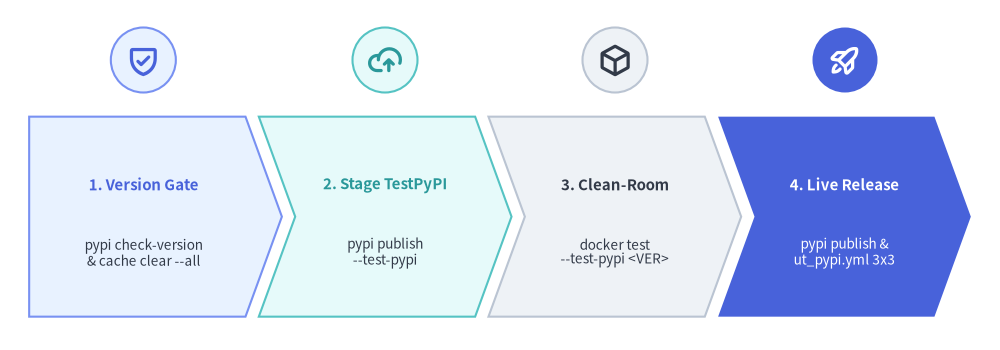
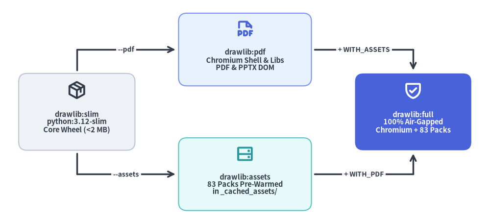

Developer Tooling: Publishing & Clean-Room Testing
Releasing a graphics and document-compilation library requires strict safeguards so published wheels never depend on uncommitted local files, stale cached binaries, or host-specific system state.

Source Code
from drawlib.canvas import save, setup
from drawlib.icons import phosphor
from drawlib.shapes import circle
from drawlib.smartarts import ChevronProcess
from drawlib.styles import Styles
setup(width=122, height=42)
pipeline = ChevronProcess(
style=Styles.Neutral,
text_style=Styles.DarkBold.patch(text_size=10.8),
description_style=Styles.Dark.patch(text_size=10.0),
corner_angle=70.0,
spacing=1.6,
flat_left_end=True,
)
pipeline.add(
"1. Version Gate",
description="pypi check-version\n& cache clear --all",
style=Styles.PrimaryNeutral,
text_style=Styles.PrimaryBold.patch(text_size=10.8),
)
pipeline.add(
"2. Stage TestPyPI",
description="pypi publish\n--test-pypi",
style=Styles.SecondaryNeutral,
text_style=Styles.SecondaryBold.patch(text_size=10.8),
)
pipeline.add(
"3. Clean-Room",
description="docker test\n--test-pypi <VER>",
style=Styles.Neutral,
text_style=Styles.DarkBold.patch(text_size=10.8),
)
pipeline.add(
"4. Publish & Tag",
description="pypi publish, v* tag\n& release.yml",
style=Styles.PrimaryFlat,
text_style=Styles.WhiteBold.patch(text_size=10.8),
description_style=Styles.White.patch(text_size=10.0),
)
pipeline.draw(xy=(3.5, 4.0), width=115.0, height=24.0)
badges = [
(17.5, phosphor.shield_check, Styles.PrimaryNeutral, Styles.PrimaryBold),
(47.0, phosphor.cloud_arrow_up, Styles.SecondaryNeutral, Styles.SecondaryBold),
(75.0, phosphor.cube, Styles.Neutral, Styles.DarkBold),
(103.2, phosphor.rocket_launch, Styles.PrimaryFlat, Styles.WhiteBold),
]
for cx, icon_fn, bg_style, fg_style in badges:
circle((cx, 34.8), radius=3.9, style=bg_style)
icon_fn((cx, 34.8), width=4.1, style=fg_style)
save()
1. Concept: Eliminating "Works on My Machine" Releases
Python library releases commonly fail in subtle ways when built directly from a developer's active workspace:
- Downloaded runtime assets sitting inside
src/drawlib/_cached_assets/accidentally get bundled into the wheel, inflating a<2 MBpure-Python distribution by hundreds of megabytes. - Tests pass locally because
src/is onPYTHONPATH, masking missing subpackages or broken metadata in the built wheel. - Version numbers jump unintentionally, collide with already published PyPI artifacts, or drift out of sync between
release_notes.mdand GitHub Releases.
Drawlib prevents these failure modes with three tightly paired ./dcli toolsets and automated GitHub Actions workflows:
pypiToolset (tools/dcli/pypi/): Performs read-only dependency and version audits againstpyproject.tomland PyPI/TestPyPI, purges local asset caches beforeuv build, and publishes viauv publish.dockerToolset (tools/dcli/docker.py): Builds production container variants (Dockerfile.prod) and isolated clean-room test containers (Dockerfile.test_pypiandDockerfile.test_local) that run thepytestsuite withoutsrc/mounted.github-releaseToolset (tools/dcli/github_release/): Extracts structured## Version X.Y.Zsections fromdocs_src/site/en/01_getting_started/release_notes.mdto create, update, or chronologically backfill versioned GitHub Releases (vX.Y.Z)—triggered automatically by.github/workflows/release.ymlwhenever av*.*.*tag is pushed.
2. Positioning: Orthogonal Production Container Variants
tools/docker/Dockerfile.prod parameterizes two orthogonal build arguments—WITH_PDF and WITH_ASSETS—over a common python:${PYTHON_VERSION}-slim (default 3.12) base where core Python dependencies (matplotlib, pillow, pydantic, playwright, python-docx, python-pptx, typer, rich) are always installed:

Source Code
from drawlib.canvas import save, setup
from drawlib.diagrams.architecture import ArchitectureDiagram, Node, PhosphorIcon
from drawlib.styles import Styles
setup(width=118, height=54)
d = ArchitectureDiagram(
node_style=Styles.PrimaryBold,
node_text_style=Styles.DarkBold.patch(text_size=10.5),
edge_style=Styles.DarkBold,
edge_text_style=Styles.DarkBold.patch(text_size=9.8),
node_card_style=Styles.Neutral.patch(shape_r=2.0),
)
slim = d.add(
Node(
"drawlib:slim\npython:3.12-slim\nCore Wheel (<2 MB)",
width=28.0,
height=18.5,
icon=PhosphorIcon.PACKAGE,
icon_size=4.6,
style=Styles.DarkBold,
card_style=Styles.Neutral.patch(shape_r=2.0),
),
xy=(14.5, 24.0),
)
pdf = d.add(
Node(
"drawlib:pdf\nChromium Shell & Libs\nPDF & PPTX DOM",
width=32.0,
height=17.5,
icon=PhosphorIcon.FILE_PDF,
icon_size=4.6,
card_style=Styles.PrimaryNeutral.patch(shape_r=2.0),
),
xy=(55.0, 39.0),
)
assets = d.add(
Node(
"drawlib:assets\n83 Packs Pre-Warmed\nin _cached_assets/",
width=32.0,
height=17.5,
icon=PhosphorIcon.HARD_DRIVES,
icon_size=4.6,
style=Styles.SecondaryBold,
card_style=Styles.SecondaryNeutral.patch(shape_r=2.0),
),
xy=(55.0, 9.0),
)
full = d.add(
Node(
"drawlib:full\n100% Air-Gapped\nChromium + 83 Packs",
width=28.0,
height=18.5,
icon=PhosphorIcon.SHIELD_CHECK,
icon_size=4.6,
style=Styles.WhiteBold,
text_style=Styles.WhiteBold.patch(text_size=10.5),
card_style=Styles.PrimaryFlat.patch(shape_r=2.0),
),
xy=(95.5, 24.0),
)
j_tl = d.junction((14.5, 39.0))
j_bl = d.junction((14.5, 9.0))
j_tr = d.junction((95.5, 39.0))
j_br = d.junction((95.5, 9.0))
d.connect(slim, j_tl, arrow="-", padding=(0.8, 0.0))
d.connect(j_tl, pdf, label="--pdf", padding=(0.0, 0.8))
d.connect(slim, j_bl, arrow="-", padding=(0.8, 0.0))
d.connect(j_bl, assets, label="--assets", padding=(0.0, 0.8))
d.connect(pdf, j_tr, label="+ WITH_ASSETS", arrow="-", padding=(0.8, 0.0))
d.connect(j_tr, full, padding=(0.0, 0.8))
d.connect(assets, j_br, label="+ WITH_PDF", arrow="-", padding=(0.8, 0.0))
d.connect(j_br, full, padding=(0.0, 0.8))
d.draw(xy=(4.0, 3.0))
save()
3. Details: PyPI Release Pipeline, GitHub Releases & Clean-Room Verification
3.1. Dependency Auditing & Version Verification (./dcli pypi)
pyproject.toml statically configures package metadata—including readme = "docs_src/README_PYPI.md", requires-python = ">=3.11", and all runtime dependencies (matplotlib, pillow>=13.0.0, numpy, pydantic, pygments, markdown-it-py, jinja2, markupsafe, typer, rich, playwright, python-docx, python-pptx). The pypi toolset inspects pyproject.toml strictly read-only without mutating project files:
./dcli pypi deps&dep-releases <package>: Lists direct runtime dependencies declared inpyproject.tomland queries PyPI release histories (--from YEAR,--to YEAR,--format text|json) to audit upstream compatibility across Python 3.11–3.14../dcli pypi list-versions&latest [--test-pypi]: Queries published versions on live PyPI or TestPyPI../dcli pypi check-version [--test-pypi] [--allow-jump]: Validates thatproject.versioninpyproject.tomladvances monotonically from the latest published release without accidental minor or major jumps (unless--allow-jumpis explicitly passed)../dcli pypi publish [--test-pypi] [--allow-jump]: ResolvesTEST_PYPI_TOKENorPYPI_TOKEN(from.env, environment variables, or--token) and executes a deterministic 4-step sequence:- Runs
check-versionagainst the target index. - Removes any stale
dist/directory. - Runs
uv run drawlib cache clear --allsosrc/drawlib/_cached_assets/contains zero downloaded fonts, icons, or maps prior to wheel assembly. - Runs
uv build(uv_buildbackend) followed byuv publish(targetinghttps://test.pypi.org/legacy/when--test-pypiis set).
- Runs
3.2. Production Docker Variants (./dcli docker build)
./dcli docker (status, build, test, list, prune) builds four production tags from tools/docker/Dockerfile.prod (supporting --python 3.11|3.12|3.13|3.14 and --pypi <VER> to install from PyPI instead of local source):
drawlib:slim(default):python:3.12-slim+ Mesa/GLib libraries (libgl1,libglx-mesa0,libglib2.0-0) + coredrawlibwheel (playwright,python-docx, andpython-pptxPython packages included). Ideal for PNG/SVG/HTML/DOCX builds.drawlib:pdf(--pdf->WITH_PDF=true): Runsplaywright install --with-deps --only-shell chromiumto add the headless Chromium shell and Linux shared libraries required for PDF compilation and PPTX DOM slide rasterization.drawlib:assets(--assets->WITH_ASSETS=true): Runsdrawlib cache download --allat image build time, pre-populating all 83 verified font, icon, and map packages directly intodrawlib._cached_assets/inside the installed package directory.drawlib:full(--full->WITH_PDF=true+WITH_ASSETS=true): Combines headless Chromium and all 83 pre-warmed asset packs so air-gapped enterprise environments operate with zero runtime network access.
3.3. Clean-Room Container & Cross-OS Matrix Testing (Dockerfile.test_pypi & ut_pypi.yml)
Before and after production publication, Drawlib validates the packaged artifact in two independent clean-room environments:
# 1. Stage to TestPyPI and verify inside a clean Linux container
./dcli pypi publish --test-pypi
./dcli docker test --test-pypi <VERSION>
# 2. Publish to live PyPI and verify the live wheel
./dcli pypi publish
./dcli docker test --pypi <VERSION>
# 3. Tag and push to trigger .github/workflows/release.yml automatically
git tag v<VERSION> && git push origin v<VERSION>
- Isolated Container Verification (
tools/docker/Dockerfile.test_pypi):- Starts from
python:3.12-slim(configurable via--python), installspytest,pytest-cov, andpytest-xdist, pinsmatplotlib==3.10.9, and enforcespillow>=13.0.0so golden-image pixel comparisons match CI baselines deterministically. - Verifies via
pip index versions drawlibthat the exact<VERSION>exists on the target index, installsdrawlib==<VERSION>(--extra-index-url https://pypi.org/simple/when testing TestPyPI), and runsplaywright install-deps chromium. - Copies only
pyproject.tomlandtests/—strictly excludingsrc/—ensuring every import resolves exclusively againstsite-packages/drawlib/. - Executes
drawlib cache download --all && pytest -n auto --dist loadfile tests/drawlib/.
- Starts from
- 12-Job Cross-OS Release Matrix (
.github/workflows/ut_pypi.yml):- Triggered via
workflow_dispatchwithlib_version, delegating tout_template.ymlacross a 3 OS × 4 Python matrix (ubuntu-latest,windows-latest,macos-latest× Python3.11,3.12,3.13,3.14) to verify native font handling, path semantics, and headless rendering on every supported platform.
- Triggered via
3.4. Automated GitHub Releases (./dcli github-release & release.yml)
While release-assets manages unversioned external binary packs (assets-v0.3), tools/dcli/github_release/ manages versioned code releases (vX.Y.Z) directly from docs_src/site/en/01_getting_started/release_notes.md:
- Single-Source Changelog Extraction (
notes.py): Parses## Version X.Y.ZMarkdown sections in chronological order, strips trailing horizontal rules, auto-detectsdev/rcpre-releases (is_prerelease_version()), resolves historical commit SHAs for untagged versions viagit log -Gonpyproject.toml, and appends standardized links to PyPI and the English/Japanese release notes pages. - CLI Subcommands (
cli.py):./dcli github-release notes [VER]: Previews formatted GitHub Release Markdown forVER(defaulting topyproject.toml'sproject.version)../dcli github-release list: Compares every version inrelease_notes.mdagainst published GitHub Releases (Missing on GitHubvs.Published (Latest))../dcli github-release create [VER] [--commit SHA] [--latest/--no-latest] [--prerelease/--no-prerelease] [--update] [--dry-run]: Idempotently publishes a singlevX.Y.Zrelease (skipping existing tags unless--updateis specified)../dcli github-release sync [--from VER] [--to VER] [--update] [--dry-run]: Backfills or updates multiple releases chronologically while assigningmake_latest="true"exclusively to the highest stable version.
- Tag-Driven GitHub Actions Automation (
.github/workflows/release.yml): Pushing anyv[0-9]*.[0-9]*.[0-9]*tag triggerspublish-releaseonubuntu-latest(Python3.12+uv sync) withcontents: writepermissions, invoking./dcli github-release create "$RELEASE_TAG"usingsecrets.GITHUB_TOKENso GitHub Releases stay 100% synchronized withrelease_notes.md.
Next, explore Drawlib's 163-module test layout and dual-verification engine in Test Architecture: Hierarchy & Strategy.